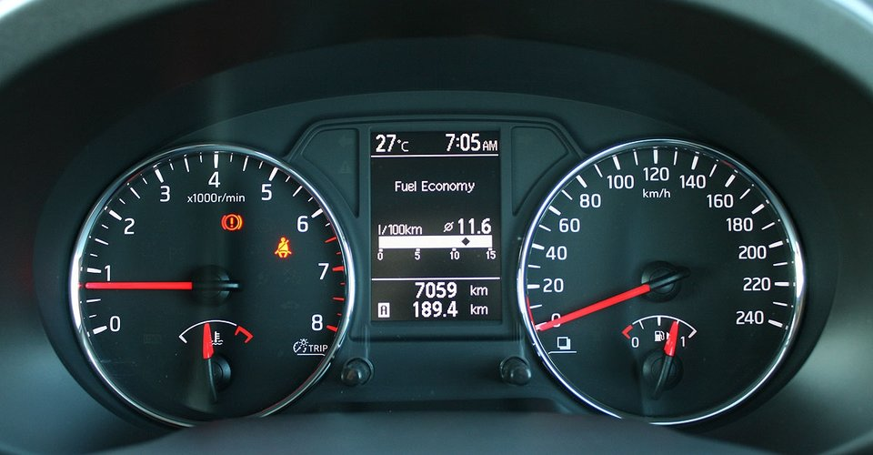
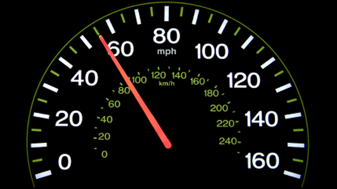

Vehicle speed units
Just an idle thought this morning: wouldnt it be great if vehicles and road authorities agreed to use SI Units to measure vehicle speed?
Okay, it probably wouldn't happen unless I were Emperor of the World, but check this out:
The Olde World: kilometers/miles per hour
In Australia (and all countries except for the United States, Liberia and Myanmar (Burma)) vehicle speed is measured in kilometers per hour (km/h or sometimes kph). This is a hang over from when we "went metric". Prior to this, we used miles per hour (MPH). It's a useful measure for a horse-and-cart, or a train, I suppose, because if you can maintain a constant speed, you can estimate how many kilometers (or miles) you can travel in one hour; or how many hours it will take to travel a long distance like, say, 500 miles.
It makes more sense for ships and aeroplanes, that cover large distances at a fairly constant rate once cruising. Airspeed (all kinds), ground speed and sailing speed are all measured in knots because of their navigational heritage. One knot is one Nautical mile per hour and is about 51.4 cm/s, by the way.
But for most of us, we don't travel multiple-hour trips any more: cars and busses are so fast, and distances so short, that trips usually last minutes, or maybe an hour or so, even for long inter-city commutes. It's only for cross-country travel (or stuck traffic) that we would drive for many hours.
Also, we rarely maintain a constant speed for a whole hour anyway: traffic controls, heavy traffic and varying road speed limits see to that.
So this unit "kilometers (or miles) per hour" is too course to be helpful. Also it doesn't really give you a good sense of how fast you're going in human terms.
If we measured vehicle speed using the normal SI unit, meters per second, then we would lose this ability to easily estimate the trip times for long distances (and be wrong anyway) but we gain much more human and meaningful measures and limits.
Meters per second is roughly "paces per heart beat"
Think about that. A pace and a heart beat are easy to imagine; much easier than a mile, a kilometer, or an hour. You have to recall past trips to imagine the distance, and how long an hour seems depends upon if you're bored or having fun, or in a hurry or not.
Now, imagine you're driving down the road at 90 km/h (roughly 55 MPH). How fast are you going, really? That's 25 meters per second ! Twenty five paces every heart beat. More than five car lengths. A whole Olympic swimming pool in two heart beats. Suddenly you understand just how fast that is, no?! Think about colliding with a stationary power post at that speed…. And that's a modest or even conservative highway speed.
By using these human-scale units of distance and time, it is easier to comprehend a vehicle's speed.
Conversions and common speeds
- 1 km/h = 0.2778 m/s (Wolfram Alpha), 1 ÷ 0.2778 = 3.5997
- 1 MPH = 0.447 m/s (Wolfram Alpha), 1 ÷ 0.447 = 2.237
So the conversion rate between m/s and km/h is 3.6. That is: multiply m/s by 3.6 to get km/h, or divide km/h by 3.6 to get m/s.
For mph (miles per hour), it's 2.2.
Here's a list of some interesting speeds:
- 5m/s - 8km/h Brisk walking pace (car park or camping ground)
- 10m/s - 36km/h Running, school zone, or road works
- 12m/s - 43km/h Usain Bolt's top speed (roughly) during a 100m sprint
- 14m/s - 50km/h City street
- 16m/s - 58km/h Rough/dirt road
- 18m/s - 65km/h
- 20m/s - 72km/h
- 22m/s - 79km/h Country road (sealed)
- 24m/s - 86km/h
- 26m/s - 94km/h
- 28m/s - 101km/h Typical limit in Australia (100km/h) (~60MPH)
- 30m/s - 108km/h Maximum limit in Australia (110km/h)
- 32m/s - 115km/h Speed a lot of highway or freeway drivers like to go
- 35m/s - 126km/h Autobahn (typical) or emergency services limit (130km/h) (~80MPH)
- 40m/s - 144km/h
- 45m/s - 162km/h (~100MPH)
- 50m/s - 180km/h
- 60m/s - 216km/h
- 70m/s - 250km/h Autobahn/super-car Gentlemen's agreement (some cars are electronically speed-limited to this)
- 80m/s - 288km/h
- 83m/s - 300km/h Autobahn theoretical limit, achieved sometimes, most racing cars on most race tracks are trimmed have a top speed around here
- 90m/s - 324km/h Roughly the speed of a nerve impulse, Mach 0.26
- 97m/s - 350km/h Valero E AVE S 103, worlds fastest series production high-speed train (max operating speed)
- 100m/s - 360km/h Most super cars top out here, on a straight smooth and level road, AGV Italio train record, Mach 0.29
Above 100m/s is pretty specialist (at least for todays' technology)
- 103.5m/s - 372.6km/h 2005 World Record Formula One top lap speed
- 105.5m/s - 379.9km/h 1996 World Record Indy 500 top lap speed
- 105.5m/s - 380km/h Maximum operating speed of Harmony CRH 380A train between Beijing and Shanghai
- 111.1m/s - 400km/h Velaro E AVE S 103 worlds fastest series production high-speed train (test runs)
- 119.4m/s - 430km/h Top speed of the Shanghai Maglev.
Emperor Mike's proposed speed limits
Some are slightly slower than current, and some slightly faster.
- 5m/s - Car park or camping ground (8km/h, currently 5 or 10 km/h depending)
- 10m/s - School zone/road workers (36km/h, currently 40km/h)
- 15m/s - City street/slow zone for road works (54km/h, currently 50km/h)
- 20m/s - Country/dirt road (72km/h, typically 80km/h)
- 25m/s - Towing speed (90km/h, currently 90km/h)
- 28m/s - Heavy vehicle limit (101km/h, currently 100km/h)
- 30m/s - Most Australian highways (108km/h, currently 100km/h)
- 32m/s - Australian freeway (115km/h, currently 110km/h)
- 35m/s - Emergency services (126km/h)
- 40m/s - Outback speed limit (currently 130km/h)
- 50m/s - Speed at which Police should abandon a pursuit as too dangerous (use air support)
Car speedometers

Car speedos Are STUPID. As if my Nissan X-Trail will ever reach 240km/h, even running the engine on the red-line! Most cars are the same.
They should be calibrated to the actual speeds we can (or are allowed to) travel.
If my cars speedo went from 0 to 35m/s in 1m/s increments with heavy marks at 5m/s, it would be perfect.
European cars would probably want to calibrate to 50m/s, and super cars might want to go to 100m/s I guess. Because, you know, super cars… Dicks.
I notice a lot of American cars show the speed using MPH and km/h:

Car makers could do something like that for every other country, showing km/h and m/s, and topping out at 160 km/h / 45 m/s (about 100MPH).